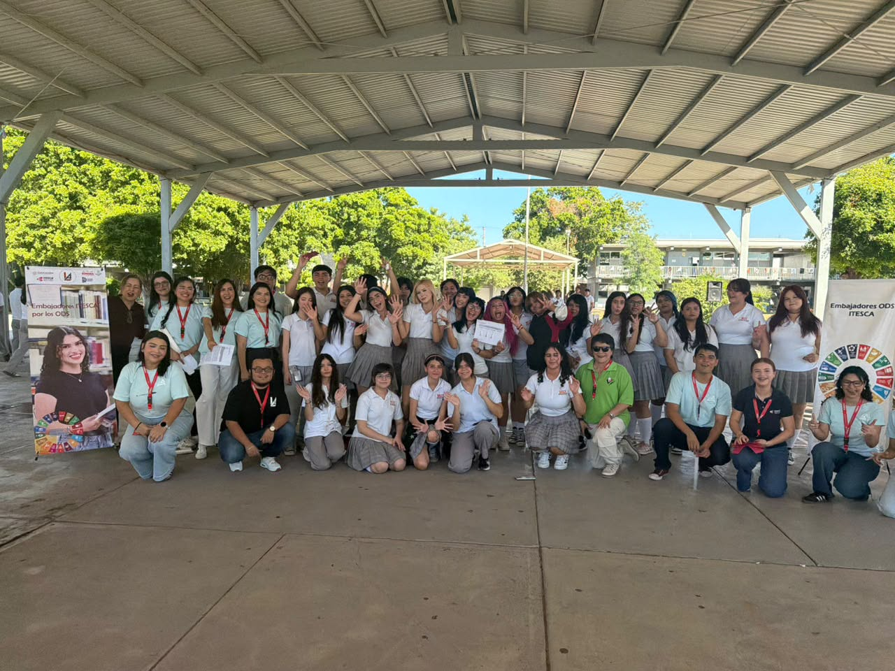

ODS 4 · Educación de calidad
Tutorías entre pares
Clubes de estudio y acompañamiento entre estudiantes para reducir el rezago educativo.
ITESCA · Cajeme, Sonora · Agenda 2030
Somos estudiantes del ITESCA comprometidos con los Objetivos de Desarrollo Sostenible. Traducimos la Agenda 2030 en acciones concretas dentro del aula, el campus y nuestra comunidad.

Encuentro de Embajadores ODSITESCA
“…Y tú, ¿con cuál te comprometes?”
01La Agenda
Un plan global. Una responsabilidad compartida. Una década para actuar.
En 2015, la ONU adoptó la Agenda 2030: un plan de acción global con 17 Objetivos de Desarrollo Sostenible y 169 metas para erradicar la pobreza, proteger el planeta y garantizar la prosperidad para todas las personas.
Los ODS no son solo temas de gobierno. Son una brújula cotidiana: la forma en que estudiamos, consumimos, nos relacionamos y decidimos también suma —o resta— al futuro común.
“Los ODS no son una lista para memorizar. Son una brújula para decidir.”
Agenda 2030 · Naciones Unidas02En acción
Encuentros, presentaciones y actividades: así se ve la Agenda 2030 cuando la comunidad estudiantil la hace suya.
Estudiantes y docentes reunidos para compartir acciones por la Agenda 2030.
01 / 11
03Quiénes somos
Un equipo de estudiantes y docentes que acerca los Objetivos de Desarrollo Sostenible a la vida del plantel.
“…Y tú, ¿con cuál te comprometes?”
Como Embajadores ODS del ITESCA llevamos la Agenda 2030 al campus: organizamos charlas, dinámicas y campañas que conectan a la comunidad estudiantil con los 17 Objetivos.
Creemos que la sostenibilidad se aprende haciendo: cada actividad es una invitación a pasar del interés a la acción.
Acercamos los ODS a cada carrera, salón y pasillo del ITESCA.
Mostramos que la sostenibilidad también se vive en lo cotidiano.
Convertimos ideas en proyectos con impacto dentro y fuera del plantel.
04Juventud
La Agenda 2030 necesita voces jóvenes, ideas nuevas y decisiones que se sostengan en el tiempo. Estas son cuatro formas de sumarte desde donde estás.
Conoce los 17 ODS y su relación con tu carrera, tu comunidad y tu día a día. La información es el primer paso para decidir mejor.
05Propuestas
Propuestas impulsadas desde la red de embajadores para pasar de la conversación a la acción.
Clubes de estudio y acompañamiento entre estudiantes para reducir el rezago educativo.
Jornadas de reforestación y separación de residuos dentro del ITESCA.
Charlas y campañas de sensibilización para una comunidad más igualitaria.
Vinculación con escuelas y colectivos para multiplicar el impacto local.
¿Tienes una idea que sume a la Agenda 2030?
Compártela con nosotros06Comunidad
Contenido sobre los ODS, convocatorias y la vida del campus. Síguenos, comparte y etiquétanos para darle más alcance a cada acción.